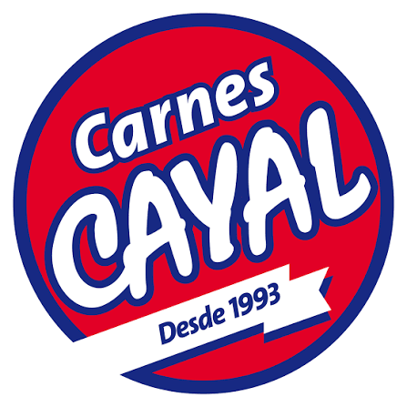

Nueva operación
Registrar transformación
Inicia una captura y el sistema te guiará paso a paso.

Nueva operación
Inicia una captura y el sistema te guiará paso a paso.
Historial
| Fecha | Responsable | Producto origen | Salida | Entrada | Merma | Producto resultante | Documentos | Estado |
|---|---|---|---|---|---|---|---|---|
| {{ registro.fecha_texto }} {{ registro.hora_texto }} | {{ registro.tablajero or 'No registrado' }} {{ registro.usuario or 'Sin usuario' }} | {{ registro.producto_base or 'No disponible' }} {% if registro.total_insumos %} {{ registro.total_insumos }} insumos {% endif %} | {{ '%.2f'|format(registro.cantidad_base_numero) }} kg | {{ '%.2f'|format(registro.cantidad_resultante_numero) }} kg | {{ '%.2f'|format(registro.merma_numero) }} kg {{ '%.1f'|format(registro.porcentaje_merma) }}% | {{ registro.producto_resultante or 'No disponible' }} | {{ registro.folio_salida }} → {{ registro.folio_entrada }} | Relacionado |
| Aún no hay transformaciones registradas. | ||||||||
Configuración
Define el producto base, sus insumos consumibles y el producto resultante.
Productos base disponibles
Un clic selecciona el producto; doble clic muestra sus insumos.
Transformaciones guardadas
Control de cambios
Consulta quién realizó cada cambio, cuándo se hizo y los valores involucrados.
Registros
0 movimientos| Fecha y hora | Usuario | Acción | Configuración | |
|---|---|---|---|---|
| Abre la auditoría para consultar los movimientos. | ||||
Productos disponibles
Solo se muestran los productos de la línea elegida.
Iniciar captura
Selecciona el movimiento y el tipo de transformación.
Confirmar registro
Revisa la información antes de generar los documentos en el sistema.
Confirmar cancelación
Los datos e insumos capturados que no se hayan guardado se perderán.
Confirmar acción
El producto dejará de mostrarse en el catálogo del módulo.
Administración protegida
Recupera productos o transformaciones para reintegrarlos al catálogo.
Consultando productos ocultos...
Confirmar recuperación
Volverá a estar disponible en el catálogo y en el módulo de transformación.
Detalle del cambio
Confirmar edición
La captura pendiente se reemplazará con los datos e insumos actuales.
Detalle del producto
Ingredientes registrados en el sistema
| Ingrediente | Cantidad | Unidad |
|---|
Documentos relacionados
Buscando...